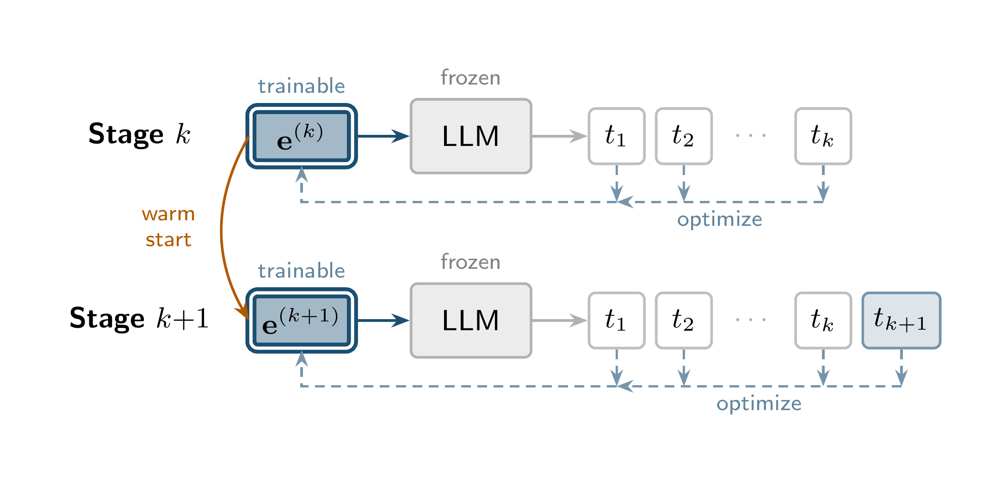
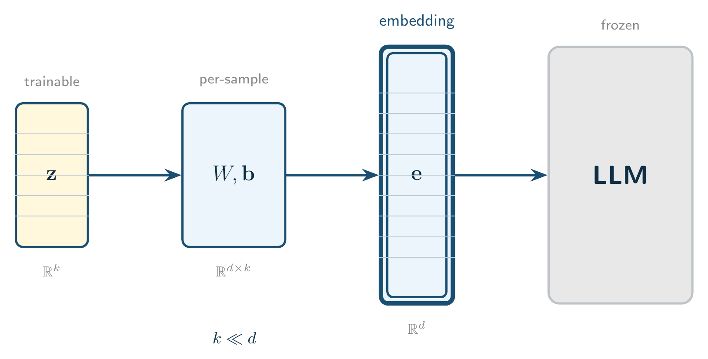
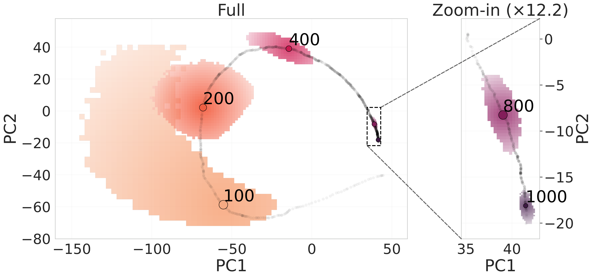
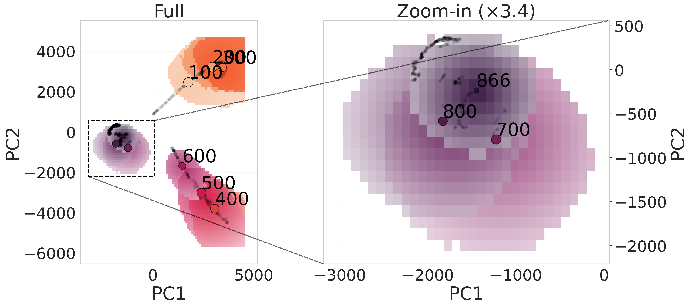
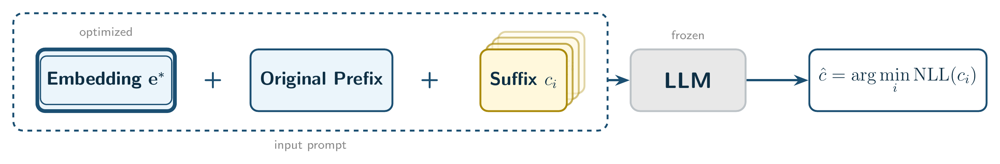
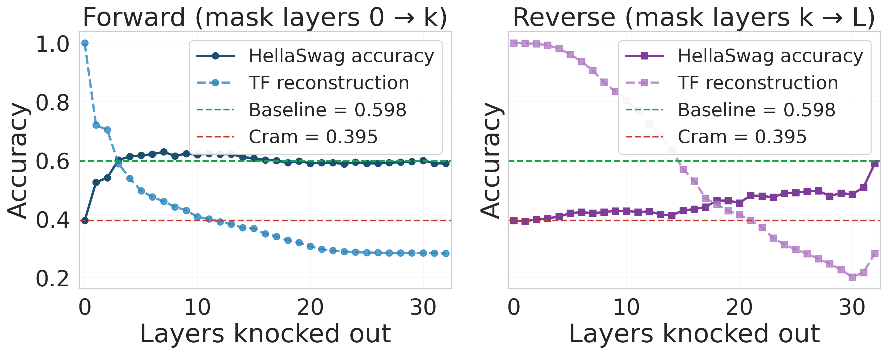
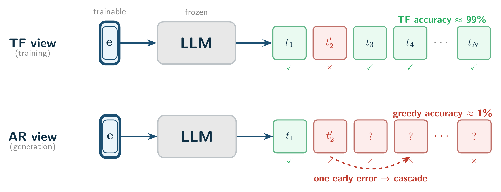

and What It Reveals

Optimize per-sample embedding $\mathbf{e}$ so a frozen LM reconstructs tokens. Extend target one token at a time, advance only after perfect convergence:

- Halt on first failure → sharp capacity boundary
- 100% greedy generation + honest per-sample capacity
- Saved $\mathbf{e}$ at each step → optimizer trajectory
Maximum number of tokens a frozen model can perfectly reconstruct from a single embedding via progressive cramming:
| Model | Tokens | +LowDim | Boost |
|---|---|---|---|
| Llama-3.1-8B | 1438 | 1697 | 1.2× |
| Pythia-1.4b | 430 | 500 | 1.2× |
| SmolLM2-1.7B | 335 | 957 | 2.9× |
| Gemma-3-4B | 214 | 697 | 3.3× |

for 99% variance
sequence length
- Embedding trajectories are intrinsically low-dimensional despite living in $\mathbb{R}^{4096}$
- Accuracy basins shrink with sequence length — longer sequences leave less room for error


Likelihood evaluation

Prepending a crammed embedding drops benchmark accuracy, even with the original prefix in context:
| Model | HS Base | HS +Emb | ARC Base | ARC +Emb |
|---|---|---|---|---|
| Pythia-1.4b | 44.0% | 37.6% | 53.1% | 49.1% |
| SmolLM2-1.7B | 53.6% | 37.0% | 67.3% | 56.0% |
| Llama-3.1-8B | 61.9% | 40.8% | 63.5% | 43.3% |
Generative evaluation
On generative 5-shot MMLU: accuracy drops to ~0% with the optimized embedding. A random control stays at baseline.

Early layers cause both reconstruction and capability collapse. Late-layer attention mass (20–60%) is a symptom. Consistent across Llama-3.1-8B, Pythia-1.4B, SmolLM2-1.7B.
Full cramming (Kuratov et al., 2025) fixes the number of tokens and optimizes all at once; progressive cramming fixes reconstruction accuracy at 100% and grows the sequence. Full cramming reaches higher capacity — but residual errors concentrate on early positions, and one early miss cascades through autoregressive generation:

| Model / Type | Tokens | TF Acc | Greedy |
|---|---|---|---|
| Llama-8B / Full | 1568 | 99.96% | 40.4% |
| Llama-8B / Progr. | 1353 | 100% | 89.8% |
| Pythia / Full | 512 | 99.71% | 44.2% |
| Pythia / Progr. | 390 | 100% | 96.9% |
- Reconstruction ≠ semantics — we do not yet know how to make a single embedding both perfectly reconstructable and semantically faithful
- Optimizer headroom — low-dim projection results suggest better optimizers could compress longer sequences than we reach
- Brittle Steering — perfect reconstruction stores nothing the model can use; downstream benchmarks drop, generative MMLU collapses to ~0%
- Early Layers — across all model families, the embedding’s causal influence concentrates in the first few layers; late-layer attention mass is a symptom